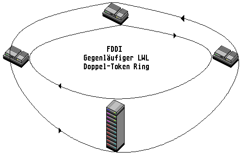

Previous
Next
TOC
FDDI (Fibre Distributed Data Interface)

FDDI ist ein Standard für Hochgeschwindigkeitsnetzwerke, bei der die
Verkabelung aus Lichtwellenleitern besteht. Das FDDI-LAN ist ein ge-
genläufiger redundanter Token Ring mit einer Datenübertragungsrate
von 100 Mbit/s. Die Entfernung zwischen zwei Stationen kann bis 2
Kilometer, die Gesamtlänge des Netzes mehr als 100 Kilometer betra-
gen.
Die FDDI Eckdaten
Topologie: redundanter LWL-Ring
Zugriffsverfahren: Token Ring
Datenrate: 100 Mbit/s
Signalrate: 125 Mbit/s
Maximale LWL-Dämpfung: 11,5 dB
Stecker: Kodierbare FDDI-Stecker
Entfernungen: bis 2 Kilometer zwischen den Stationen, bei einer maxi-
malen Gesamtlänge zwischen 100 bis 200 Kilometern.
LWL: 50/125 Mikrometer oder 62,5/125 Mikrometer Gradientenfaser.
Die Verkabelungstechnik ist einfach, eine saubere LWL-Verkabelung ist
erforderlich.
Kapitel FDDI (Fibre Distributed Data Interface), Seite 1